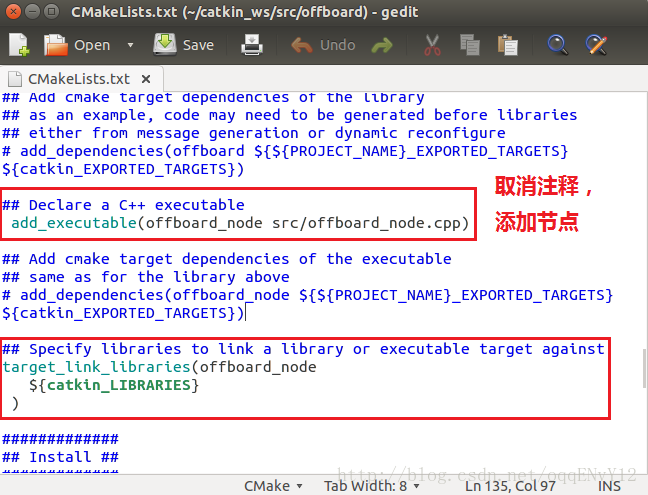

ROS（机器人操作系统，Robot Operating System），是专为机器人软件开发所设计出来的一套电脑操作系统架构。它是一个开源的元级操作系统（后操作系统），提供类似于操作系统的服务，包括硬件抽象描述、底层驱动程序管理、共用功能的执行、程序间消息传递、程序发行包管理，它也提供一些工具和库用于获取、建立、编写和执行多机融合的程序。
ROS的运行架构是一种使用ROS通信模块实现模块间P2P的松耦合的网络连接的处理架构，它执行若干种类型的通讯，包括：
- 基于服务的同步RPC（远程过程调用）通讯；
- 基于Topic的异步数据流通讯，还有参数服务器上的数据存储。
ROS可与PX4一起用于飞行器的外部控制, 它使用MAVROS节点与在硬件上运行的PX4或使用Gazebo Simulator进行通信。MAVROS节点的安装请参考Ubuntu16.04安装MAVROS，下面以编写基于MAVROS的外部控制节点为例，介绍ROS包和节点的构建过程。
ROS包构建方法
catkin和rosbuild是构建ROS包的两种方法。目前多用catkin构建ros包。
catkin包可以构建为独立项目，与构建普通cmake项目的方式相同，但catkin还提供了工作空间的概念，您可以在其中同时构建多个相互依赖的包。
ROS包构成
ROS包是其代码组织的一种高级结构好哦，最简单的catkin包的构成如下：
1 | my_package/ |
其中:
- 包必须包含一个符合catkin的package.xml文件。
- 该package.xml文件提供有关包的元信息。
- 包必须包含一个使用catkin的CMakeLists.txt。
- 如果它是catkin元数据包，它必须具有相关的样板CMakeLists.txt文件。
- 包都必须有自己的文件夹。
- 这意味着没有嵌套包，也没有多个包共享同一目录。
catkin工作空间的构成
使用catkin软件包的推荐方法是使用catkin工作区，但您也可以独立构建catkin软件包。 一个简单的工作空间可能如下所示：
1 | workspace_folder/ -- WORKSPACE |
创建catkin包
通常使用catkin_create_pkg命令创建新的catkin包，具体步骤如下：
1 | $ mkdir -p ~/catkin_ws/src |
offboard_node.cpp文件的具体内容如下：
1 | /** |
之后需要修改~/catkin_ws/src/offboard目录下的CMakeLists.txt文件。取消掉一些注释，生成相应节点（否则会出现找不到节点的错误）。

构建catkin包
在catkin工作空间（catkin_ws）中，使用catkin_make工具从源文件构建和安装一个包：
1 | $ cd ~/catkin_ws |
参考链接
- Ubuntu16.04安装MAVROS,by jackhuang.
- Creating a ROS Package, by ros homepage.
- Building a ROS Package, by ros homepage.
- Understanding ROS Nodes, by ros homepage.
- catkin 与 rosbuild解析及两者区别和联系,by Xuefeng_BUPT.
- Pixhawk原生固件PX4之SITL软件在环仿真,by FantasyJXF.
- Pixhawk原生固件PX4之offboard,by FantasyJXF.
- MAVROS Offboard control example, by dronecode.